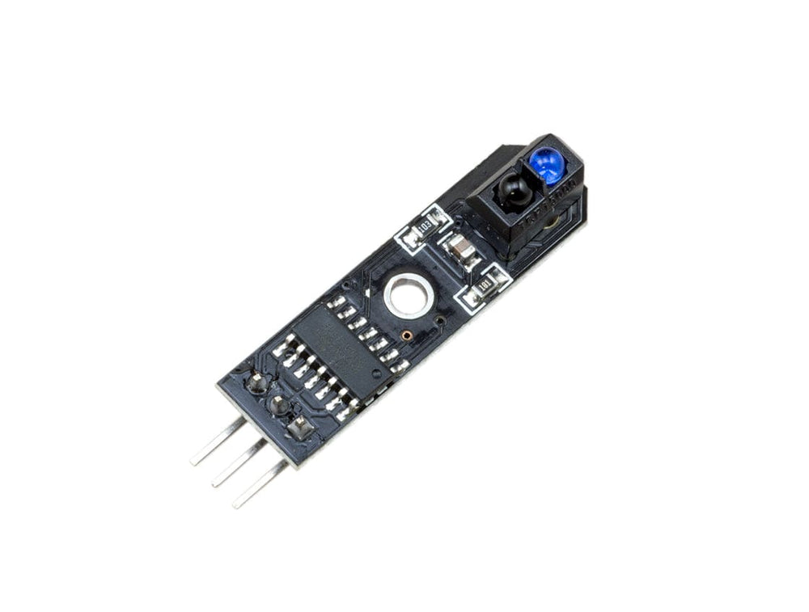
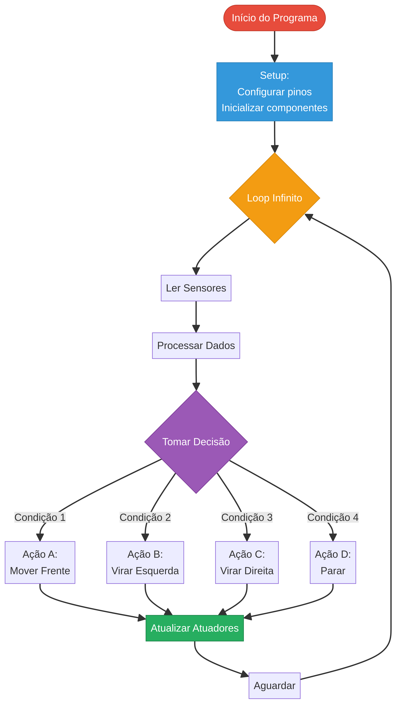

Currículo Detalhado
ESP32 Deep Dive
10 horas • 4 aulas
_# Módulo 2.1: Aprofundando no ESP32
Bem-vindo ao Nível Intermediário!
No Nível 1, você construiu um robô funcional e aprendeu os fundamentos da programação e eletrônica. Agora, no Nível 2, vamos mergulhar em conceitos mais avançados para tornar nossos robôs mais inteligentes e autônomos. Começaremos explorando todo o potencial do ESP32, o cérebro poderoso que já estamos usando.
Enquanto o Arduino UNO é fantástico para começar, o ESP32 é uma plataforma muito mais robusta, projetada para a era da Internet das Coisas (IoT). Suas principais vantagens são o processamento dual-core e, mais importante, a conectividade sem fio integrada.
 Figura 1: Diagrama de pinagem detalhado de um ESP32 DevKit, mostrando a vasta quantidade de periféricos disponíveis.
Figura 1: Diagrama de pinagem detalhado de um ESP32 DevKit, mostrando a vasta quantidade de periféricos disponíveis.
---
Arquitetura e Vantagens do ESP32
| Característica | Arduino UNO (ATmega328P) | ESP32 (Xtensa LX6) |
|---|---|---|
| Processador | Single-Core 8-bit @ 16 MHz | Dual-Core 32-bit @ 240 MHz |
| Memória RAM | 2 KB | 520 KB |
| Memória Flash | 32 KB | 4 MB (ou mais) |
| Conectividade | Nenhuma (requer shields) | Wi-Fi 802.11 b/g/n e Bluetooth 4.2/BLE |
| Pinos GPIO | 14 Digitais, 6 Analógicos | Até 34, com múltiplas funções (ADC, DAC, Touch, etc.) |
| Tensão de Operação | 5V | 3.3V |
Essa superioridade em hardware permite que o ESP32 execute tarefas muito mais complexas, como:
- Hospedar servidores web completos.
- Processar dados de múltiplos sensores em tempo real.
- Comunicar-se com outros dispositivos e serviços na nuvem.
- Executar algoritmos de machine learning (no Nível 3).
O Sistema Dual-Core
O ESP32 possui dois núcleos de processamento que podem executar tarefas de forma independente. Isso é extremamente útil em robótica. Podemos, por exemplo, dedicar um núcleo para tarefas críticas de tempo real (como o controle dos motores e a leitura de sensores), enquanto o outro núcleo cuida da comunicação Wi-Fi e da interface do usuário. Essa divisão evita que a conexão de rede interfira na estabilidade do robô.
---
Pinos e Periféricos Especiais
Além dos pinos digitais e analógicos, o ESP32 oferece uma gama de periféricos avançados:
- ADC (Conversor Analógico-Digital): Múltiplos pinos para ler sensores analógicos com maior precisão.
- DAC (Conversor Digital-Analógico): Dois pinos que podem gerar um sinal de tensão analógico real, útil para áudio.
- Sensores de Toque: Pinos que podem detectar o toque capacitivo, permitindo criar interfaces sem botões físicos.
- LEDC (PWM Avançado): O sistema de PWM do ESP32 é muito mais flexível que o do Arduino, permitindo configurar frequência e resolução para até 16 canais, ideal para controlar muitos servos ou LEDs com precisão.
- Comunicação: Além do Serial (
UART), o ESP32 suportaI2CeSPI, protocolos para se comunicar com centenas de sensores e outros chips usando poucos fios.
---
Projeto Prático: Monitor de Status com Web Server
Vamos criar um projeto que demonstra o poder do ESP32. Construiremos um servidor web que não apenas controla um LED, mas também exibe o status de um pino (como um botão) e o tempo que o ESP32 está ligado (uptime).
- 1x ESP32 DevKit
- 1x LED
- 1x Resistor de 220Ω
- 1x Botão (Push-button)
- 1x Resistor de 10kΩ (pull-down)
- Protoboard e Fios Jumper
- LED: Conecte o anodo (+) do LED ao GPIO 26 através do resistor de 220Ω. Conecte o catodo (-) ao
GND. - Botão: Conecte um terminal do botão ao GPIO 25. No mesmo terminal, conecte o resistor de 10kΩ, e a outra ponta do resistor ao
GND. Conecte o outro terminal do botão ao3.3Vdo ESP32.
#include <WiFi.h>
// Configurações de Rede
const char* ssid = "SEU_WIFI"; // <<< COLOQUE O NOME DA SUA REDE
const char* password = "SUA_SENHA"; // <<< COLOQUE A SENHA DA SUA REDE
WiFiServer server(80);
// Pinos dos componentes
const int pinoLed = 26;
const int pinoBotao = 25;
void setup() {
Serial.begin(115200);
pinMode(pinoLed, OUTPUT);
pinMode(pinoBotao, INPUT);
// Conecta ao Wi-Fi
Serial.print("Conectando a ");
Serial.println(ssid);
WiFi.begin(ssid, password);
while (WiFi.status() != WL_CONNECTED) {
delay(500);
Serial.print(".");
}
Serial.println("\nWiFi conectado!");
Serial.print("Endereço IP: ");
Serial.println(WiFi.localIP());
server.begin();
}
void loop() {
WiFiClient client = server.available();
if (client) {
String req = client.readStringUntil('\r');
// Controle do LED
if (req.indexOf("/led/on") != -1) {
digitalWrite(pinoLed, HIGH);
} else if (req.indexOf("/led/off") != -1) {
digitalWrite(pinoLed, LOW);
}
// Monta a página HTML
client.println("HTTP/1.1 200 OK");
client.println("Content-Type: text/html");
client.println("Connection: close");
client.println();
client.println("<!DOCTYPE html><html><head><title>ESP32 Web Server</title>");
client.println("<meta http-equiv=\"refresh\" content=\"5\">"); // Atualiza a página a cada 5s
client.println("</head><body><h1>Status do ESP32</h1>");
client.print("<p>Uptime: ");
client.print(millis() / 1000);
client.println(" segundos</p>");
client.print("<p>Status do Botão: ");
client.print(digitalRead(pinoBotao) == HIGH ? "Pressionado" : "Solto");
client.println("</p>");
client.println("<p>Controle do LED:</p>");
client.println("<a href=\"/led/on\"><button>Ligar</button></a>");
client.println("<a href=\"/led/off\"><button>Desligar</button></a>");
client.println("</body></html>");
}
}
- Atualize o SSID e a Senha: Mude
"SEU_WIFI"e"SUA_SENHA"para os dados da sua rede Wi-Fi. - Carregue o Código: Envie o código para o ESP32.
- Encontre o IP: Abra o Monitor Serial. Ele mostrará o endereço de IP que o ESP32 recebeu do seu roteador.
- Acesse o Servidor: Digite esse endereço de IP no navegador de qualquer dispositivo (computador, celular) conectado à mesma rede Wi-Fi.
Você verá uma página que mostra há quanto tempo o ESP32 está ligado e o estado do botão. A página se atualizará automaticamente a cada 5 segundos. Os botões na página permitirão que você ligue e desligue o LED remotamente.
Este projeto demonstra como o ESP32 pode atuar como um dispositivo de IoT completo, servindo uma interface de usuário e interagindo com o hardware simultaneamente. No próximo módulo, vamos aprofundar na criação de interfaces web mais ricas e na comunicação sem fio.
WiFi e Conectividade
10 horas • 5 aulas
_# Módulo 2.2: Comunicação Sem Fio e Interfaces Web
Wi-Fi: O Coração da Conectividade
No projeto anterior, usamos o ESP32 no modo Station (STA), onde ele se conecta a uma rede Wi-Fi existente, como um celular ou computador. No projeto do Nível 1 (Rover de Papel), usamos o modo Access Point (AP), onde o ESP32 cria sua própria rede Wi-Fi.
Compreender a diferença é fundamental para a robótica conectada:
| Modo | Descrição | Vantagens | Desvantagens |
|---|---|---|---|
| Station (STA) | O ESP32 é um cliente em uma rede maior (seu roteador de casa). | Acesso à internet, comunicação com outros dispositivos na rede. | Depende de uma rede Wi-Fi existente. |
| Access Point (AP) | O ESP32 é o roteador, criando sua própria rede. | Autocontido, funciona em qualquer lugar sem infraestrutura externa. | Sem acesso à internet, apenas dispositivos conectados diretamente a ele podem se comunicar. |
| AP + STA | Modo híbrido onde o ESP32 cria sua rede e simultaneamente se conecta a outra. | O melhor dos dois mundos: oferece um ponto de acesso para configuração e ainda se conecta à internet. | Mais complexo de gerenciar. |
Para robôs móveis, o modo AP é excelente para controle direto em campo, enquanto o modo STA é ideal para robôs que precisam buscar informações da internet ou serem controlados de qualquer lugar do mundo.
---
HTTP e a Web: Como Funciona a Comunicação
Quando você acessa uma página no seu navegador, seu dispositivo está fazendo uma requisição HTTP para um servidor. O servidor então envia de volta uma resposta HTTP, que contém o conteúdo da página (geralmente HTML, CSS e JavaScript).
- Requisição (Request): O cliente (navegador) pede um recurso. Ex:
GET /led/on. - Resposta (Response): O servidor (ESP32) envia o recurso ou uma confirmação. Ex:
HTTP/1.1 200 OKseguido do código HTML.
Nosso ESP32 atua como um mini servidor web. Ele escuta por requisições e responde de acordo com a lógica que programamos.
Criando Interfaces Web Melhores
No código anterior, o HTML e o CSS estavam misturados em uma única String no código C++, o que é difícil de manter. Uma abordagem muito mais limpa é armazenar o HTML em uma variável separada usando a notação R"rawliteral(...)rawliteral" do C++. Isso permite escrever HTML de forma muito mais natural.
 Figura 1: Um robô com ESP32-CAM sendo controlado por uma interface web sofisticada em um smartphone.
Figura 1: Um robô com ESP32-CAM sendo controlado por uma interface web sofisticada em um smartphone.
---
Projeto Prático: Dashboard de Controle Avançado
Vamos evoluir nosso web server para um dashboard mais completo. Ele terá botões que mudam de cor para refletir o estado do LED e usará um pouco de JavaScript para enviar comandos sem recarregar a página (uma técnica conhecida como AJAX), tornando a experiência muito mais fluida.
Materiais:- Os mesmos do projeto anterior (Módulo 2.1).
- A mesma do projeto anterior.
Este código é mais longo, mas a maior parte é a página HTML e o JavaScript. A lógica no ESP32 continua simples.
#include <WiFi.h>
// ===== Configurações de Rede =====
const char* ssid = "SEU_WIFI";
const char* password = "SUA_SENHA";
WiFiServer server(80);
// ===== Pinos e Estado =====
const int pinoLed = 26;
bool estadoLed = false;
// ===== Página HTML com CSS e JavaScript =====
const char* HTML_PAGE = R"rawliteral(
<!DOCTYPE html>
<html lang="pt-BR">
<head>
<meta charset="utf-8" />
<meta name="viewport" content="width=device-width,initial-scale=1" />
<title>ESP32 Dashboard</title>
<style>
body { font-family: system-ui, sans-serif; text-align:center; margin: 24px; background-color: #f0f0f0; }
h1 { color: #333; }
.card { background-color: white; padding: 20px; border-radius: 12px; box-shadow: 0 4px 8px rgba(0,0,0,0.1); max-width: 400px; margin: 20px auto; }
button { font-size: 18px; padding: 12px 24px; border: none; border-radius: 8px; cursor: pointer; transition: background-color 0.3s; }
.on { background-color: #2ecc71; color: white; }
.off { background-color: #e74c3c; color: white; }
</style>
</head>
<body>
<h1>Dashboard do Robô</h1>
<div class="card">
<h2>Controle do LED</h2>
<p>O LED está atualmente: <b id="status">DESLIGADO</b></p>
<button id="btnLigar" class="on" onclick="sendCommand('on')">LIGAR</button>
<button id="btnDesligar" class="off" onclick="sendCommand('off')">DESLIGAR</button>
</div>
<script>
function sendCommand(cmd) {
fetch('/led/' + cmd)
.then(response => response.text())
.then(data => {
document.getElementById('status').innerText = data;
});
}
</script>
</body>
</html>
)rawliteral";
void setup() {
pinMode(pinoLed, OUTPUT);
digitalWrite(pinoLed, LOW);
WiFi.begin(ssid, password);
while (WiFi.status() != WL_CONNECTED) { delay(500); }
server.begin();
}
void handleRequest(WiFiClient& client, String req) {
String response_content_type = "text/html";
String response_body = "";
if (req.startsWith("GET /led/on")) {
estadoLed = true;
digitalWrite(pinoLed, HIGH);
response_content_type = "text/plain";
response_body = "LIGADO";
} else if (req.startsWith("GET /led/off")) {
estadoLed = false;
digitalWrite(pinoLed, LOW);
response_content_type = "text/plain";
response_body = "DESLIGADO";
} else {
response_body = HTML_PAGE;
}
client.println("HTTP/1.1 200 OK");
client.println("Content-Type: " + response_content_type + "; charset=utf-8");
client.println("Connection: close\r\n");
client.print(response_body);
}
void loop() {
WiFiClient client = server.available();
if (!client) return;
String req = client.readStringUntil('\r');
while (client.available()) client.read();
handleRequest(client, req);
delay(1);
}
- HTML/CSS: A página agora tem um estilo mais agradável, com um "card" para organizar o conteúdo.
- JavaScript (AJAX): A função
sendCommand(cmd)usa a APIfetch()do navegador. Quando um botão é clicado, o JavaScript envia a requisição (ex:/led/on) para o ESP32 em segundo plano. Ele não recarrega a página inteira. - Lógica do ESP32: O servidor agora é mais inteligente. Se ele recebe um comando
/led/onou/led/off, ele muda o estado do LED e responde apenas com o novo status em texto puro (ex: "LIGADO"). Se ele recebe qualquer outra requisição, ele responde com a página HTML completa. - Atualização da Interface: O JavaScript recebe a resposta de texto puro e atualiza apenas o
com o ID "status", mudando o texto na tela sem piscar.
Ao acessar o IP do seu ESP32, você verá um dashboard mais profissional. Clicar nos botões "LIGAR" e "DESLIGAR" mudará o estado do LED instantaneamente, e o texto de status na página será atualizado sem que a página inteira precise ser recarregada. Esta é a base para criar interfaces de controle de robôs muito mais responsivas e agradáveis de usar.
No próximo módulo, vamos adicionar mais "sentidos" ao nosso robô com sensores avançados.
Bluetooth e BLE
8 horas • 3 aulas
_# Módulo 2.3: Sensores Avançados
Dando Mais Sentidos ao Robô
No Nível 1, usamos o sensor ultrassônico para dar ao nosso robô uma percepção básica de distância. Agora, vamos equipá-lo com sentidos mais aguçados que permitem tarefas de navegação complexas, como seguir uma linha ou saber sua própria orientação no espaço.
Sensor de Linha Infravermelho (TCRT5000)
O TCRT5000 é um sensor de refletância. Ele consiste em um LED infravermelho (emissor) e um fototransistor (receptor). O LED emite luz IR, que é refletida pela superfície abaixo do sensor e captada pelo fototransistor.
- Superfícies Claras (Branco): Refletem muita luz IR. O fototransistor recebe um sinal forte.
- Superfícies Escuras (Preto): Absorvem a maior parte da luz IR. O fototransistor recebe um sinal fraco.
Ao ler a intensidade do sinal refletido, o robô pode distinguir entre uma linha preta e um fundo branco, tornando-se a base para um robô seguidor de linha.
 Figura 1: Um módulo com o sensor TCRT5000. Ele já inclui o circuito necessário e um pino de saída digital e/ou analógico.Unidade de Medição Inercial (IMU) - MPU-6050
A IMU é um dos sensores mais poderosos para robótica. O MPU-6050 é um chip que combina dois sensores em um:
- Acelerômetro: Mede a aceleração linear em três eixos (X, Y, Z). Pode ser usado para detectar inclinação e movimento.
- Giroscópio: Mede a velocidade angular (rotação) em três eixos (X, Y, Z). É essencial para saber o quão rápido o robô está virando.
Combinando os dados desses dois sensores (um processo chamado de fusão de sensores), podemos obter uma estimativa muito precisa da orientação do robô no espaço (seu roll, pitch e yaw). Isso é crucial para realizar curvas precisas (ex: virar exatamente 90 graus) ou para manter o robô equilibrado.
 Figura 2: Um módulo MPU-6050 conectado a um Arduino via protocolo I2C, que usa apenas dois fios de dados (SDA e SCL).
Figura 2: Um módulo MPU-6050 conectado a um Arduino via protocolo I2C, que usa apenas dois fios de dados (SDA e SCL).
---
Projeto Prático: Navegador com IMU
Vamos construir um programa que lê os dados do MPU-6050 e os exibe no Monitor Serial. Este é o primeiro passo para usar a IMU em um sistema de navegação.
Materiais Necessários:- 1x ESP32 DevKit
- 1x Módulo MPU-6050
- Protoboard e Fios Jumper
O MPU-6050 se comunica usando o protocolo I2C, que é muito conveniente pois usa apenas dois pinos de dados.
- Alimentação: Conecte o pino
VCCdo MPU-6050 ao pino3.3Vdo ESP32. Conecte oGNDdo MPU-6050 aoGNDdo ESP32. - Dados I2C:
- Conecte o pino SCL (Serial Clock) do MPU-6050 ao pino GPIO 22 do ESP32 (pino SCL padrão).
- Conecte o pino SDA (Serial Data) do MPU-6050 ao pino GPIO 21 do ESP32 (pino SDA padrão).
Primeiro, instale a biblioteca para o MPU-6050. Vá em Ferramentas > Gerenciar Bibliotecas e instale a biblioteca "Adafruit MPU6050" e suas dependências (como a "Adafruit BusIO" e a "Adafruit Unified Sensor").
#include <Adafruit_MPU6050.h>
#include <Adafruit_Sensor.h>
#include <Wire.h>
// Cria um objeto para o sensor MPU6050
Adafruit_MPU6050 mpu;
void setup() {
Serial.begin(115200);
// Tenta inicializar o sensor
if (!mpu.begin()) {
Serial.println(\"Falha ao encontrar o chip MPU6050. Verifique as conexões!\");
while (1) {
delay(10);
}
}
Serial.println(\"MPU6050 Encontrado!\");
// Configura as faixas de medição (opcional)
mpu.setAccelerometerRange(MPU6050_RANGE_8_G);
mpu.setGyroRange(MPU6050_RANGE_500_DPS);
mpu.setFilterBandwidth(MPU6050_BAND_21_HZ);
}
void loop() {
// Cria variáveis para armazenar os eventos (leituras) dos sensores
sensors_event_t a, g, temp;
mpu.getEvent(&a, &g, &temp);
// Imprime os dados do Acelerômetro (em m/s^2)
Serial.print(\"Aceleração X: \");
Serial.print(a.acceleration.x);
Serial.print(\", Y: \");
Serial.print(a.acceleration.y);
Serial.print(\", Z: \");
Serial.print(a.acceleration.z);
Serial.println(\" m/s^2\");
// Imprime os dados do Giroscópio (em rad/s)
Serial.print(\"Rotação X: \");
Serial.print(g.gyro.x);
Serial.print(\", Y: \");
Serial.print(g.gyro.y);
Serial.print(\", Z: \");
Serial.print(g.gyro.z);
Serial.println(\" rad/s\");
Serial.println(\"---\" );
delay(500); // Pausa de meio segundo entre as leituras
}
Abra o Monitor Serial. Você verá um fluxo contínuo de dados do acelerômetro e do giroscópio. Tente mover e girar o sensor MPU-6050. Observe como os valores nos eixos X, Y e Z mudam de acordo com o movimento.
- Acelerômetro: Com o sensor parado e nivelado, o eixo Z deve mostrar um valor próximo a 9.8 m/s², que é a aceleração da gravidade. Ao inclinar o sensor, a gravidade será distribuída entre os eixos X e Y.
- Giroscópio: Com o sensor parado, os valores devem ser próximos de zero. Ao girá-lo, você verá picos de velocidade angular no eixo correspondente.
Entender e interpretar esses dados é o primeiro passo para criar algoritmos de controle sofisticados, que é exatamente o que faremos no próximo módulo.
Sensores Avançados e IMU
10 horas • 4 aulas
_# Módulo 2.4: Algoritmos de Controle
Dando Inteligência ao Movimento
Até agora, nossos robôs ou eram controlados diretamente por nós (teleoperados) ou tinham uma lógica de decisão muito simples (se a distância for menor que X, faça Y). Para criar robôs verdadeiramente autônomos, precisamos de algoritmos de controle: um conjunto de regras e cálculos que permitem ao robô tomar decisões inteligentes com base nos dados dos sensores para atingir um objetivo.
Neste módulo, vamos explorar dois algoritmos fundamentais: a lógica para seguir uma linha e o famoso controle PID.
---
Lógica de um Robô Seguidor de Linha
Um dos desafios clássicos da robótica é construir um robô que possa seguir uma linha preta em um fundo branco. A lógica por trás disso é um excelente exercício de controle.
Imagine que nosso robô tem três sensores de linha (TCRT5000) na frente: um à esquerda, um no centro e um à direita.
 Figura 1: Um robô autônomo precisa de algoritmos para interpretar os dados dos seus sensores e decidir como se mover.
Figura 1: Um robô autônomo precisa de algoritmos para interpretar os dados dos seus sensores e decidir como se mover.
A lógica de decisão pode ser descrita como uma série de regras "SE-ENTÃO":
| Leitura dos Sensores (Esquerda, Centro, Direita) | Situação | Ação do Robô |
|---|---|---|
| Branco, Preto, Branco | O robô está perfeitamente sobre a linha. | Mover para frente em velocidade normal. |
| Branco, Branco, Preto | O robô está desviando para a esquerda. | Virar para a direita para corrigir. |
| Preto, Branco, Branco | O robô está desviando para a direita. | Virar para a esquerda para corrigir. |
| Branco, Branco, Branco | O robô perdeu a linha (ou chegou a uma interrupção). | Parar ou iniciar uma rotina de busca. |
| Preto, Preto, Preto | O robô encontrou uma intersecção ou a linha de chegada. | Parar ou tomar uma decisão mais complexa. |
Este é um exemplo de uma máquina de estados finitos, onde o robô está sempre em um de vários estados possíveis e transita entre eles com base nas leituras dos sensores.
---
Controle PID: O Segredo da Precisão
A lógica "SE-ENTÃO" funciona, mas muitas vezes resulta em um movimento oscilante, onde o robô ziguezagueia sobre a linha. Para um movimento suave e preciso, usamos um Controlador Proporcional-Integral-Derivativo (PID).
O PID é um algoritmo de controle de malha fechada amplamente utilizado na indústria e na robótica. Seu objetivo é minimizar o erro entre o estado atual de um sistema e o estado desejado (o setpoint).
No nosso robô seguidor de linha, o erro pode ser definido como a distância do sensor central até o centro da linha. O PID calcula uma saída de correção para os motores com base em três termos:
 Figura 2: Um fluxograma de programa de robô. O controle PID se encaixa no passo de "Processar Dados" e "Tomar Decisão".1. Termo Proporcional (P)
O termo Proporcional é a parte mais intuitiva. A correção é proporcional ao erro atual.
- Se o robô está muito longe da linha (erro grande), a correção é forte (vira bruscamente).
- Se o robô está perto da linha (erro pequeno), a correção é suave.
O Kp é uma constante de ganho que ajustamos. Um Kp muito alto causa oscilações; um Kp muito baixo torna o robô lento para reagir.
2. Termo Integral (I)
O termo Integral lida com o erro acumulado ao longo do tempo. Ele serve para corrigir pequenos erros persistentes que o termo P sozinho não consegue eliminar (erro de estado estacionário).
- Se o robô fica consistentemente um pouco à direita da linha, o erro se acumula, e o termo I aumenta gradualmente a correção para a esquerda até que o erro seja zerado.
O Ki é a constante integral. Um Ki muito alto pode levar a uma correção exagerada e instabilidade.
3. Termo Derivativo (D)
O termo Derivativo olha para a taxa de variação do erro (a "velocidade" com que o erro está mudando). Ele tem um efeito de amortecimento, prevendo o erro futuro e agindo para evitar que a correção seja excessiva (overshoot).
- Se o robô está se aproximando da linha muito rápido, o termo D reduz a força da correção para que ele não passe direto pelo centro.
O Kd é a constante derivativa. Ele ajuda a estabilizar o sistema e reduzir as oscilações.
A Equação Final do PID
A correção total aplicada aos motores é a soma dos três termos:
Correção_Final = (Kp erro) + (Ki soma_dos_erros) + (Kd * (erro_atual - erro_anterior))Esta Correção_Final é então usada para ajustar a velocidade dos motores esquerdo e direito, fazendo o robô seguir a linha de forma suave e eficiente.
---
Projeto Prático: Simulação de Controle PID
Implementar um PID completo em hardware requer um ajuste cuidadoso (chamado de tuning) das constantes Kp, Ki e Kd. Antes de colocar no robô, vamos fazer um programa simples que simula a lógica do PID no Monitor Serial.
Materiais:- Apenas um ESP32 DevKit.
Este código simula um sistema (como nosso robô) que tenta alcançar um setpoint (ponto desejado) de 100.
// Variáveis do sistema simulado
double setpoint = 100.0; // O valor que queremos alcançar
double valorAtual = 0.0; // O valor atual do sistema
double saidaMotor = 0.0; // A "força" aplicada ao sistema
// Constantes do PID (Tuning)
double Kp = 0.5;
double Ki = 0.2;
double Kd = 0.1;
// Variáveis do PID
double erro;
double erroAnterior = 0;
double integral = 0;
double derivativo;
unsigned long tempoAnterior;
void setup() {
Serial.begin(115200);
tempoAnterior = millis();
}
void loop() {
unsigned long tempoAtual = millis();
double dt = (double)(tempoAtual - tempoAnterior) / 1000.0; // Delta T em segundos
tempoAnterior = tempoAtual;
// ===== Lógica do PID =====
erro = setpoint - valorAtual;
integral += erro * dt;
derivativo = (erro - erroAnterior) / dt;
erroAnterior = erro;
// Calcula a saída do PID
double saidaPID = (Kp erro) + (Ki integral) + (Kd * derivativo);
// ===== Simulação do Sistema =====
// A saída do PID afeta o valor atual do sistema (simulando o motor empurrando o robô)
valorAtual += saidaPID * dt;
// Imprime os resultados
Serial.print("Setpoint: "); Serial.print(setpoint);
Serial.print(" | Valor Atual: "); Serial.print(valorAtual);
Serial.print(" | Erro: "); Serial.print(erro);
Serial.print(" | Saída PID: "); Serial.println(saidaPID);
// Para a simulação quando chegar perto do setpoint
if (abs(erro) < 0.1) {
Serial.println("\nSetpoint alcançado! Fim da simulação.");
while(true) delay(1000);
}
delay(100);
}
Abra o Monitor Serial. Você verá o Valor Atual começar em 0 e gradualmente se aproximar do Setpoint de 100. Observe como a Saída PID é alta no início (quando o erro é grande) e diminui à medida que o Valor Atual se aproxima do Setpoint.
Experimente mudar os valores de Kp, Ki e Kd:
- Aumente
Kp: o sistema responderá mais rápido, mas pode passar do setpoint e oscilar. - Aumente
Ki: o sistema eliminará erros pequenos mais rápido, mas pode se tornar instável. - Aumente
Kd: o sistema ficará mais estável e com menos oscilações.
Entender essa dinâmica é a chave para aplicar o PID em projetos reais. No projeto final deste nível, usaremos essa lógica para criar um robô autônomo que navega com precisão.
Controle PID
8 horas • 3 aulas
_# Módulo 2.5: Alimentação e Gestão de Energia
A Força Vital do Robô
Um robô autônomo só é verdadeiramente autônomo se puder carregar sua própria fonte de energia. No Nível 1, usamos um power bank, que é uma solução simples e eficaz. No entanto, para robôs mais compactos e integrados, precisamos de um sistema de alimentação dedicado. Este módulo aborda os fundamentos da gestão de energia para robôs móveis.
Tipos de Baterias
A escolha da bateria é uma das decisões mais críticas no design de um robô. Ela afeta o peso, a autonomia e a segurança do projeto.
| Tipo de Bateria | Vantagens | Desvantagens |
|---|---|---|
| Alcalinas (AA, AAA) | Baratas, fáceis de encontrar. | Não recarregáveis, baixa capacidade de corrente. |
| NiMH (Níquel-Hidreto Metálico) | Recarregáveis, mais seguras que Li-Ion. | Menor densidade de energia, efeito memória (em modelos antigos). |
| Li-Ion (Íon de Lítio) / Li-Po (Polímero de Lítio) | Alta densidade de energia (muita capacidade em pouco peso), alta capacidade de corrente. | Requerem circuitos de proteção (contra sobrecarga, descarga excessiva e curto-circuito), mais caras, sensíveis a danos físicos. |
Para robótica, as baterias de Li-Ion (como as células 18650) e Li-Po são as mais populares devido à sua excelente relação energia/peso. No entanto, elas exigem um cuidado extremo no manuseio e carregamento.
AVISO DE SEGURANÇA: Nunca use baterias de Lítio sem um BMS (Battery Management System) ou um circuito de proteção adequado. Uma sobrecarga ou um curto-circuito pode causar incêndios ou explosões.Reguladores de Tensão
Os componentes de um robô geralmente operam em tensões diferentes. Por exemplo:
- Motores: Podem precisar de 6V, 7.4V ou até 12V.
- ESP32: Opera com 3.3V, mas pode ser alimentado com 5V em seu pino VIN.
- Sensores: Alguns operam em 5V, outros em 3.3V.
Uma bateria de Li-Ion fornece uma tensão que varia (ex: de 4.2V quando cheia a 3.0V quando vazia). Para fornecer as tensões estáveis que nossos componentes precisam, usamos reguladores de tensão.
Reguladores Step-Down (Buck Converter)
Um conversor step-down reduz a tensão. Por exemplo, ele pode pegar os 7.4V de duas células de Li-Ion em série e convertê-los em 5V estáveis para alimentar o ESP32 e os servos.
Reguladores Step-Up (Boost Converter)
Um conversor step-up aumenta a tensão. Por exemplo, ele pode pegar os 3.7V de uma única célula de Li-Ion e elevá-los para 5V.
O uso de conversores DC-DC (como os Buck e Boost) é muito mais eficiente do que usar reguladores lineares (como o LM7805), pois eles desperdiçam muito menos energia na forma de calor, o que é crucial para maximizar a autonomia da bateria.
Projeto Prático: Sistema de Alimentação com Bateria 18650
Vamos projetar um sistema de alimentação básico para nosso robô usando uma célula de Li-Ion 18650 e um módulo que já inclui o carregador e o conversor step-up.
Materiais Necessários:- 1x Célula de Li-Ion 18650
- 1x Suporte para bateria 18650
- 1x Módulo Carregador TP4056 com Proteção e Step-Up
- Este tipo de módulo é muito popular. Ele possui uma entrada micro-USB para carregar a bateria, um circuito de proteção e uma saída de 5V estabilizada.
- Fios e conectores
- Encaixe a Bateria: Coloque a célula 18650 no suporte, observando a polaridade correta.
- Conecte a Bateria ao Módulo: Solde os fios do suporte de bateria aos pads
B+eB-do módulo TP4056. - Saída de 5V: O módulo terá saídas marcadas como
OUT+eOUT-. Esta será a sua fonte de 5V estabilizada para alimentar o robô (ESP32 e motores). - Carregamento: Para carregar a bateria, basta conectar um cabo micro-USB à porta do módulo. Um LED no módulo indicará o status do carregamento (geralmente vermelho para carregando, azul/verde para completo).
graph TD
subgraph "Fonte de Energia"
Bateria[Célula Li-Ion 18650]
Modulo[Módulo TP4056 com Step-Up]
end
subgraph "Carga do Robô"
ESP32[ESP32]
Motores[Motores / Servos]
Sensores[Sensores]
end
Bateria -- 3.7V --> Modulo
Modulo -- 5V Estabilizado --> ESP32
Modulo -- 5V Estabilizado --> Motores
ESP32 -- 3.3V --> Sensores
style Bateria fill:#f39c12,stroke:#d68910,color:#fff
style Modulo fill:#3498db,stroke:#2980b9,color:#fff
Você agora tem um sistema de alimentação compacto e recarregável. A saída de 5V do módulo pode ser conectada diretamente à protoboard do seu robô, substituindo o power bank. Isso torna o robô totalmente independente e muito mais profissional.
No próximo módulo, vamos juntar todos os conceitos do Nível 2 para construir um robô autônomo completo, capaz de navegar em um ambiente usando sensores avançados e algoritmos de controle.
Armazenamento e Logging
6 horas • 3 aulas
Módulo 2.6: Projeto Final Nível 2 - Robô Autônomo Multi-Sensor
O Desafio da Autonomia
Bem-vindo ao projeto final do Nível Intermediário! É hora de combinar o poder do ESP32, a precisão dos sensores avançados, a inteligência dos algoritmos de controle e um sistema de energia dedicado para construir um robô autônomo multi-sensor.
Nosso objetivo é construir um robô que possa navegar em um ambiente simples, realizando duas tarefas principais:
- Seguir uma linha preta no chão.
- Parar automaticamente se um obstáculo aparecer em seu caminho.
Este projeto representa um salto significativo em complexidade e capacidade em relação ao robô do Nível 1, transformando-o de um veículo teleoperado para um agente autônomo.
Figura 1: Nosso objetivo é um robô que integra múltiplos sensores para navegar de forma inteligente.
---
1. Upgrade do Hardware
Vamos partir do nosso Rover de Papel e adicionar os novos componentes.
Materiais Adicionais:- 1x Módulo com 3 ou mais sensores de linha (TCRT5000)
- 1x Sensor Ultrassônico HC-SR04 (com divisor de tensão)
- 1x Sistema de alimentação com bateria (como o projetado no Módulo 2.5)
- Um chassi mais robusto (acrílico ou MDF é uma boa opção, mas o de papelão ainda funciona para prototipagem)
- Chassi: Monte o novo chassi, garantindo espaço para todos os componentes.
- Motores e Rodas: Fixe os servos de rotação contínua e as rodas, como no projeto anterior.
- Sistema de Alimentação: Instale a bateria e o módulo de gerenciamento de energia, garantindo que a saída de 5V esteja acessível.
- Montagem dos Sensores:
- Sensores de Linha: Monte o módulo de sensores de linha na frente do robô, o mais próximo possível do chão (cerca de 3-5 mm de altura é o ideal).
- Sensor Ultrassônico: Monte o HC-SR04 na frente do robô, apontado para frente, a uma altura que possa detectar obstáculos comuns.
- Eletrônica: Posicione o ESP32 e a protoboard no chassi e faça todas as conexões.
- Motores: Esquerdo no GPIO 18, Direito no GPIO 19.
- Sensor Ultrassônico:
Trigno GPIO 12,Echono GPIO 13 (com divisor de tensão). - Sensores de Linha (exemplo para 3 sensores):
- Sensor Esquerdo: GPIO 32
- Sensor Central: GPIO 33
- Sensor Direito: GPIO 34
---
2. A Lógica do Programa: Uma Máquina de Estados
Nosso programa será estruturado como uma máquina de estados. O robô estará sempre em um de dois estados principais: SEGUINDO_LINHA ou EVITANDO_OBSTACULO.
stateDiagram-v2
[*] --> SEGUINDO_LINHA
SEGUINDO_LINHA --> EVITANDO_OBSTACULO: Obstáculo detectado
EVITANDO_OBSTACULO --> SEGUINDO_LINHA: Obstáculo removido
EVITANDO_OBSTACULO: Parar e esperar
- O estado padrão é
SEGUINDO_LINHA. - A cada ciclo do
loop(), o robô primeiro verifica a distância com o sensor ultrassônico. - Se a distância for menor que um limiar (ex: 15 cm), ele transita para o estado
EVITANDO_OBSTACULO, onde a ação principal é parar. - Se não houver obstáculo, ele executa a lógica do estado
SEGUINDO_LINHA, usando os sensores de linha para ajustar a direção.
---
3. Código do Projeto
Este código integra a leitura de todos os sensores e implementa a máquina de estados descrita.
#include <ESP32Servo.h>
// --- Configuração dos Pinos
const int pinoServoEsquerdo = 18;
const int pinoServoDireito = 19;
const int pinoTrig = 12;
const int pinoEcho = 13;
const int pinoSensorLinhaEsq = 32;
const int pinoSensorLinhaCen = 33;
const int pinoSensorLinhaDir = 34;
// --- Servos e Movimento
Servo servoEsquerdo;
Servo servoDireito;
int velocidadeBase = 150; // Velocidade de cruzeiro
// --- Sensores e Lógica
#define DISTANCIA_OBSTACULO 15 // cm
enum EstadoRobo { SEGUINDO_LINHA, EVITANDO_OBSTACULO };
EstadoRobo estadoAtual = SEGUINDO_LINHA;
void setup() {
Serial.begin(115200);
// Inicializa os motores
servoEsquerdo.attach(pinoServoEsquerdo);
servoDireito.attach(pinoServoDireito);
// Inicializa os pinos dos sensores
pinMode(pinoTrig, OUTPUT);
pinMode(pinoEcho, INPUT);
pinMode(pinoSensorLinhaEsq, INPUT);
pinMode(pinoSensorLinhaCen, INPUT);
pinMode(pinoSensorLinhaDir, INPUT);
}
// --- Funções de Movimento
void parar() { servoEsquerdo.writeMicroseconds(1500); servoDireito.writeMicroseconds(1500); }
void frente() { servoEsquerdo.writeMicroseconds(1500 + velocidadeBase); servoDireito.writeMicroseconds(1500 - velocidadeBase); }
void esquerda() { servoEsquerdo.writeMicroseconds(1500 - velocidadeBase); servoDireito.writeMicroseconds(1500 - velocidadeBase); }
void direita() { servoEsquerdo.writeMicroseconds(1500 + velocidadeBase); servoDireito.writeMicroseconds(1500 + velocidadeBase); }
// --- Funções de Leitura de Sensores
int lerDistancia() {
digitalWrite(pinoTrig, LOW);
delayMicroseconds(2);
digitalWrite(pinoTrig, HIGH);
delayMicroseconds(10);
digitalWrite(pinoTrig, LOW);
long duracao = pulseIn(pinoEcho, HIGH);
return duracao * 0.0343 / 2;
}
void loop() {
// 1. Verificação de Obstáculos (maior prioridade)
int distancia = lerDistancia();
if (distancia < DISTANCIA_OBSTACulo && distancia > 0) {
estadoAtual = EVITANDO_OBSTACULO;
} else {
estadoAtual = SEGUINDO_LINHA;
}
// 2. Executa a lógica baseada no estado atual
switch (estadoAtual) {
case SEGUINDO_LINHA:
// Lê os sensores de linha (LOW = viu linha preta)
bool esq = digitalRead(pinoSensorLinhaEsq) == LOW;
bool cen = digitalRead(pinoSensorLinhaCen) == LOW;
bool dir = digitalRead(pinoSensorLinhaDir) == LOW;
if (cen) {
frente(); // Em cima da linha, vai para frente
} else if (esq) {
esquerda(); // Desviou para a direita, corrige para a esquerda
} else if (dir) {
direita(); // Desviou para a esquerda, corrige para a direita
} else {
// Perdeu a linha, para (ou pode girar para procurar)
parar();
}
break;
case EVITANDO_OBSTACULO:
Serial.println("Obstáculo detectado! Parando.");
parar();
break;
}
delay(20); // Pequeno delay para estabilidade
}
---
4. Teste e Desafios
- Crie uma Pista: Desenhe uma pista simples em uma cartolina branca grande usando fita isolante preta. Comece com retas e curvas suaves.
- Calibre os Motores: Certifique-se de que os valores de
1500emparar()realmente param seus motores. Ajuste se necessário. - Teste os Sensores: Antes de colocar o robô na pista, verifique se os sensores de linha e o sensor ultrassônico estão fornecendo leituras corretas via Monitor Serial.
- Execute o Robô: Coloque o robô na pista e ligue-o. Ele deve começar a seguir a linha. Teste a função de evitar obstáculos colocando sua mão na frente dele.
- Controle PID: Substitua a lógica simples de seguir linha por um controle PID (como discutido no Módulo 2.4) para um movimento muito mais suave e rápido.
- Intersecções: Melhore o código para que o robô possa lidar com intersecções em "T" ou em cruz.
- Interface de Status: Use o que aprendeu no Módulo 2.2 para criar um web server que mostre o estado atual do robô (seguindo linha, parado, etc.) e as leituras dos sensores em tempo real.
Projeto Final: Robô Autônomo Completo
8 horas • Projeto Integrado
Especificações do Projeto
Construa um robô móvel autônomo com as seguintes características:
-
🔧
Hardware
ESP32, motores com encoder, IMU, ultrassom, display OLED
-
🔧
Modos de Operação
Manual (WiFi/BLE), seguidor de linha PID, desviador de obstáculos
-
🔧
Interface Web
Dashboard responsivo com telemetria em tempo real via WebSocket
-
🔧
Telemetria e Cloud
Envio de dados para MQTT broker, histórico em SD card
-
🔧
Controle Inteligente
PID para motores, fusão de sensores IMU, odometria com encoders
-
🏆
Desafio Final
Crie uma missão autônoma: navegar por labirinto, retornar ao ponto de partida e enviar mapa via WiFi!